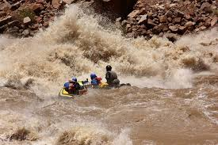

About my favorite hobby
Rafting
Places I have rafted
- Cataract Canyon
located in southern Utah
- The Grand Canyon
located in Arizona
- Desolation Canyon
located on the Green river running through Utah
- WestWater Canyon
located on eastern Utah/colorado border
- The Snake River
located north in Idaho
- The Salmon River
located north in Idaho

Back to Home